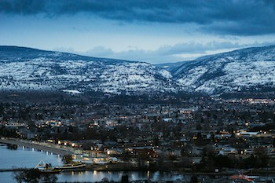
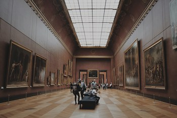
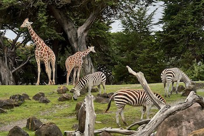

Things to Do


While most museums are a collection of old artifacts and stuff that no one is really interested in seeing, our museums are the best of the best.
You won't find anything like these anywhere else in the world. Our museums rival that of our closest competitors including the Museum of Bad Art, the Paris Sewers Museum and the Museum of Broken Relationships.
Come check them out...the fun is waiting for you.

Our waterpark is the biggest and best park in the Western World. Just south of interstate 2015, you'll find a sweet mix of Super Slides and lazy rivers. If that wasn't enough, we have 376 of the best food trucks in the state serving everything from fried gummy bears to lemonade and pizza. Don't forget if you buy our collectors edition souvenir water park keepsake, you get free refills all year. And we wouldn't be SplashAnyone without the rules about splashing ... wait there are no rules.

Finally, you won't want to miss out on cuddly little zoo animals. Lions, tigers and bears...Oh My! We have the largest selection of born in captivity animals. We didn't want to take them from their natural habitat, so we just got them from the other zoos in the state.